My Phone
The user panel — everything a non-admin needs, also on a phone screen. Sign in at http://<PBX-IP>:8001 (or your published address).
| Page | What it does |
|---|---|
| Overview | Phone status (each signed-in phone, including the Android app as “My Phone app”), Do Not Disturb, new voicemail, missed calls, where 911 sends help, plan usage, recent calls |
| Calls | 90-day history (can't be deleted), recordings, Block and Report per call |
| Voicemail | Listen, download, move, delete; greeting upload or record by phone (*98) |
| Faxes new | Received faxes as PDFs (view, download, delete), Send a fax and the Sent list, and My fax branding. Shown when your plan includes Fax — see Faxes |
| Recordings | The user's own recordings only |
| Messages | Conversations; send a text to any extension (including Zoiper and other SIP apps); Block, Report; updates by itself. External numbers go out via voip.ms (see SMS & MMS) |
| IVR | Personal menus (if their plan allows) |
| Billing | Choose, switch or cancel a plan (Stripe) |
| Contacts new | Your private address book (other users never see it). Add, edit, search, select and delete (or delete all); import a vCard (.vcf) or CSV, export all as vCard. Each contact has a timeline of calls, texts, voicemail and recordings with them, and private notes |
| App | Pair the Android app: Get a pairing code shows a QR code, tap-to-copy code and server, and an Open in the My Phone app button. Show phone login QR gives the app your extension's phone login for calls. See and sign out your signed-in phones |
| Settings | DND, forwarding, ring time, answer with IVR, "Record my calls" (with legal acknowledgement), notification email, text emails on/off, receive/send texts on/off, call filtering (per number: "not in service", straight to voicemail, forward elsewhere, ring but no voicemail, or always ring even on Do Not Disturb), ring my cell too (see below), push-to-talk (see below), 911 notice, phone setup, SIP password, panel password |
The My Phone app gives you the same features with a phone-first layout, notifications, calls in and out from the app, long sign-in and a PIN lock. To connect it, tap Sign in with my browser in the app and sign in — it pairs by itself.
Faxes new
- Received: faxes sent to the numbers that ring you, as PDFs, with a new-fax count. They're emailed to you too if the admin set that up.
- Send a fax: upload a PDF or photo, enter the fax number, choose which of your numbers it's sent from, and add an optional cover page (To, Subject, message). The form shows how many faxes you have left this month.
- Sent: waiting / sending / will retry / sent / failed; busy lines are tried 3 times, and you're emailed the result. Cancel one that hasn't gone yet.
- My fax branding (if the admin allows it): your own logo, company details, footer notice and header line, with Preview cover page.
Call filtering new
Settings → Call filtering: add an extension or number and choose what happens when it calls you. Only you see your list; the Android app shows it too.
| Choice | What the caller gets |
|---|---|
| Not in service | “The number you have dialed is not in service”. Also stops their texts. |
| Straight to my voicemail | Your phones don't ring. Also stops their texts. |
| Forward to another number | Sent to the extension or number you enter. Also stops their texts. |
| Ring me, but no voicemail | Your phones ring as usual; if you don't answer (or decline), the call ends instead of reaching your voicemail. |
| Always ring me | Rings you even when Do Not Disturb is on (a VIP). |
Press *86 during a call someone made to you to hang up and add them as “not in service”. The admin can also set rules for the whole PBX (Caller rules).
Contacts, names and notes
- Names everywhere: once a number is in your contacts, its name shows instead of the bare number in Calls, Voicemail, Recordings and Messages — and on your ringing phones (desk phone, Zoiper, the app's call screen). Names are yours: two people can name the same number differently.
- Numbers match however they're written:
+1 (310) 555-0100,13105550100and3105550100are the same contact (and the same as on your block list). - Notes are private and stay after the 90-day call-history cleanup. A note can be about a specific call, text, voicemail or recording; deleting that voicemail or recording deletes its notes, and deleting a contact deletes all of its notes.
- Import / export: bring contacts in from your phone or another system as a vCard or CSV; export them all as one vCard.
- Your contacts belong to your login, not your extension: if the admin gives your extension to someone else, they don't get your address book.
Ring my cell too
Settings → My cell number and Also ring my cell on shared numbers: when a call comes in on one of the PBX's numbers that rings you — a number routed to you, a ring group you're in, or a menu option that rings you — your cell rings as well (calls dialled straight to your extension don't), after a delay you choose (0–30 seconds, default 15) so your desk phone and the app ring first.
- Press 1 to accept: when you answer on the cell you hear a short prompt; the call connects only when you press 1. Silence or any other key (for example your cell's voicemail picking up) hangs up just your cell; the other phones keep ringing. You have 12 seconds.
- Uses your outside-call minutes (your plan), goes out over the admin's outbound route, and respects your Do Not Disturb and block list.
- Once anyone answers, the cell stops ringing (or never starts if its delay hadn't run out).
Texting from My Phone
Messages → pick a conversation or start one. Extension-to-extension texts arrive on the other person's phones (SIP MESSAGE) and in their My Phone. Type an external number (e.g. +15550192837) and it goes out through voip.ms from your mapped DID — see SMS & MMS.
Blocking and reporting
From Calls or Messages, Block sends a caller straight to your block list (your choice per number: "not in service", voicemail, or forward elsewhere). Report flags a call or text for the admin, who sees it under Reports.
Recording your own calls
Settings → "Record my calls" needs recording in your plan plus your own legal acknowledgement. See Call recording and the law — the rules differ by where you live.
Push-to-talk
Push-to-talk is a walkie-talkie page: dial *88 followed by an extension (for example *88 then 8801) and the other phone chirps — a short three-tone alert that cuts over the normal ringtone — and shows who is paging. Nothing connects until they tap Accept: a page never opens someone's phone line by itself — unless the caller is on their auto-accept list (below). Once connected, it works like a walkie-talkie: in the Android app you hold a big button to talk.
- Permission comes from your plan — or an admin override: push-to-talk works when your plan includes it (Admin panel → Billing → Plans), or when your admin ticks Allow push-to-talk (override) on your login. No plan with push-to-talk and no override means no push-to-talk — guests included. On top of that, you switch it on yourself — Settings → Call handling → Push-to-talk → Enable push-to-talk. Nobody can switch it on for you.
- The status line tells you where you stand: not available on your account, on, or available but not switched on yet.
- Auto-accept for people you trust: Settings → Auto-accept pages from takes a list of extensions. Pages from those extensions skip the Accept screen — one chirp and the line opens on speaker, the classic walkie-talkie way. Your microphone still stays off until you hold to talk (or use VOX), so a trusted caller can be heard instantly but can never overhear you. Everyone not on your list chirps and waits for your tap, exactly as before. The list is yours alone — not even an admin can put someone on it for you.
- If you don't accept a page, your own setting decides what happens — Settings → If I don't accept a push-to-talk: send the caller to my voicemail, or chirp me again (up to 3 tries) and then voicemail. Tapping No accept is final, though: a page you actively decline is never re-chirped — the caller goes straight to voicemail. A desk phone that isn't picked up follows the same rule.
- If either side isn't permitted — the caller has no push-to-talk, or the person being called has none or hasn't switched it on — the caller hears a "cannot be completed" announcement and the call ends, without ringing through.
- Push-to-talk calls are never recorded, even if call recording is on for either side.
The user portal in pictures
Every tab of the web portal your users sign in to, photographed on a running system (phone numbers and account names in the photos are demo values). Click any photo to pop it up full size; the ‹ › arrows move through the gallery without leaving the page.

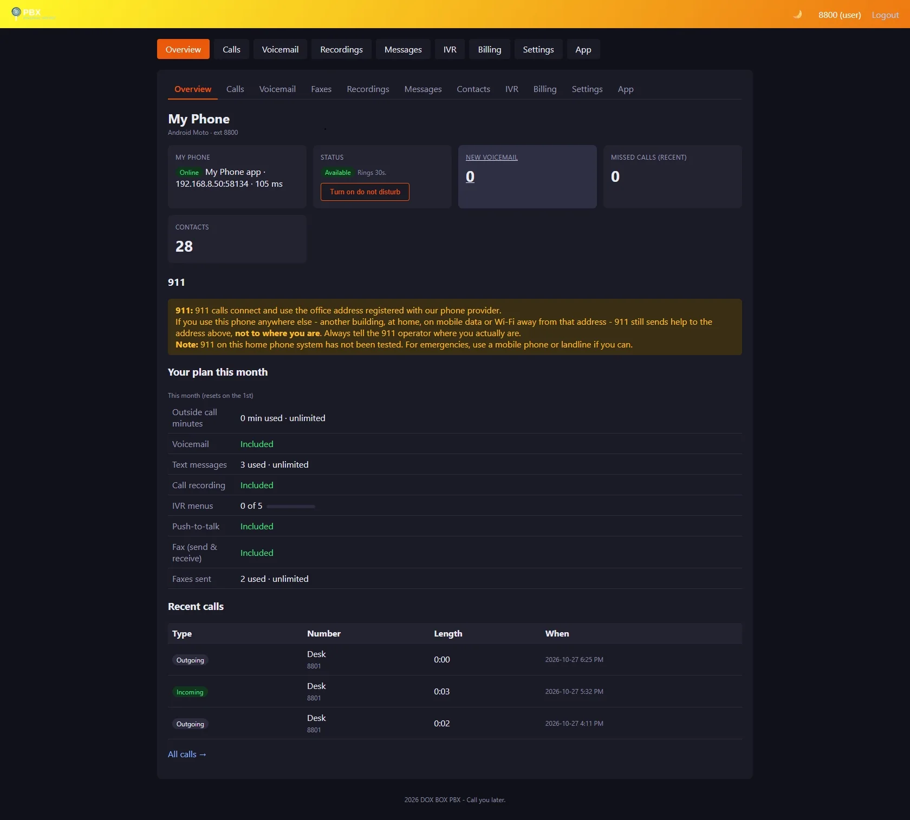

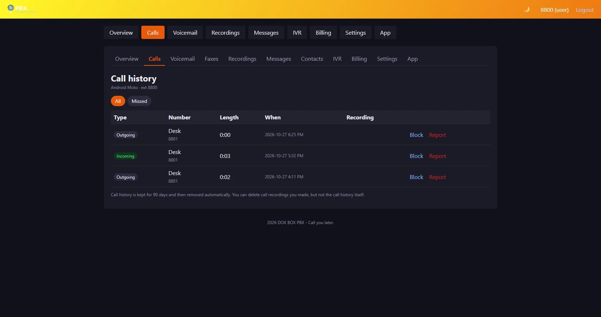

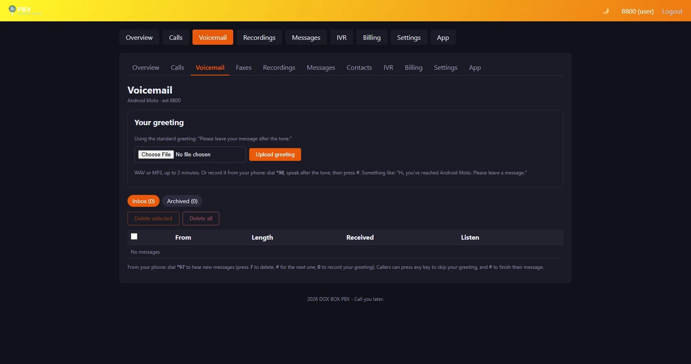

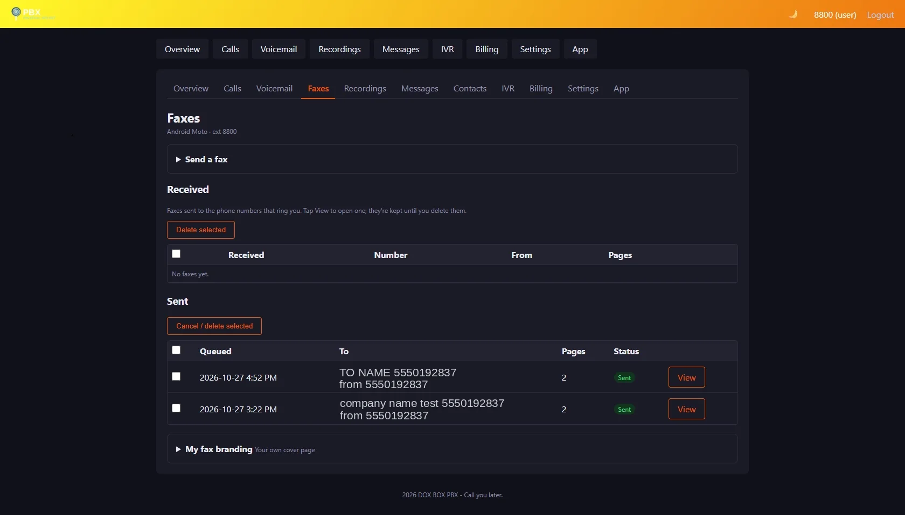

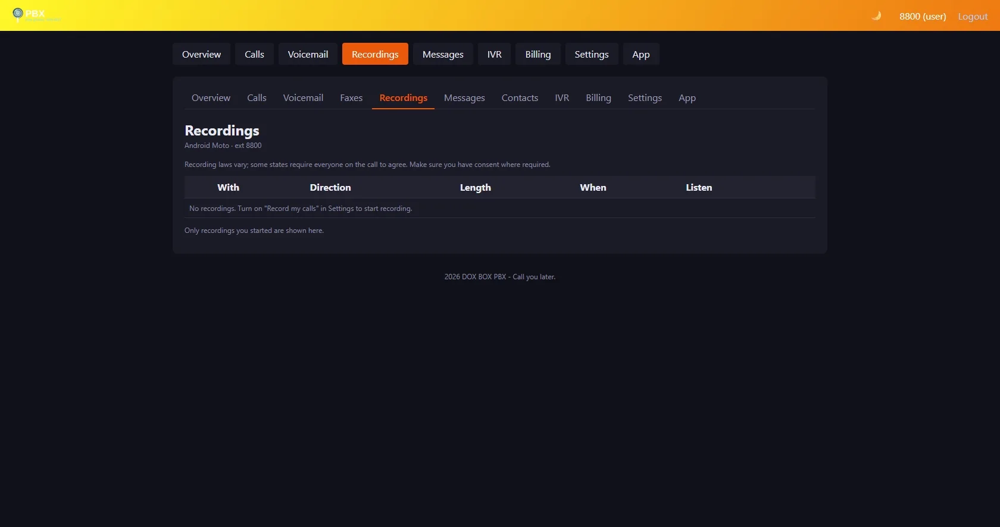

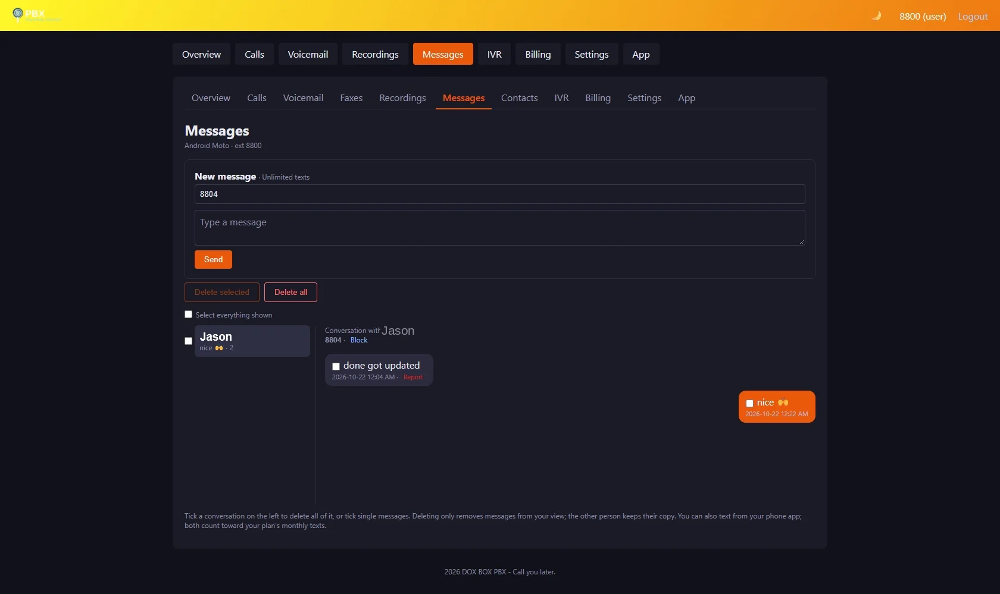

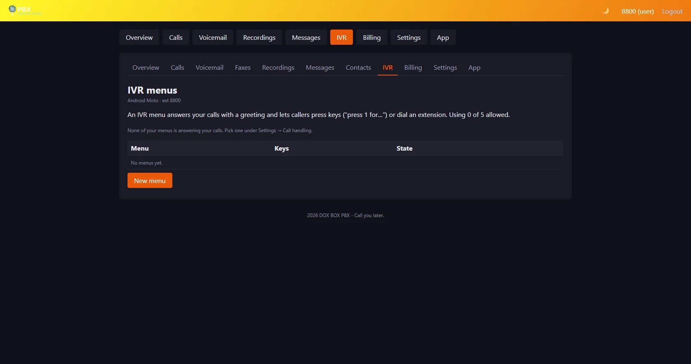

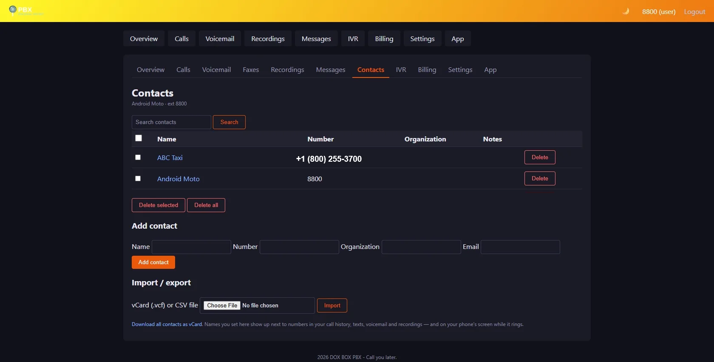

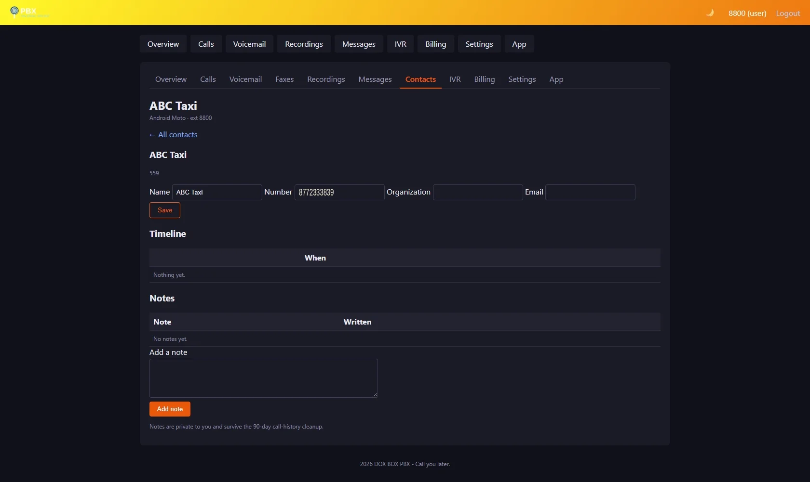

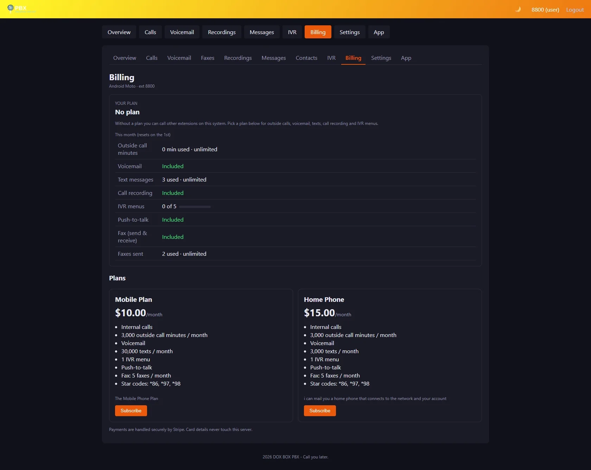

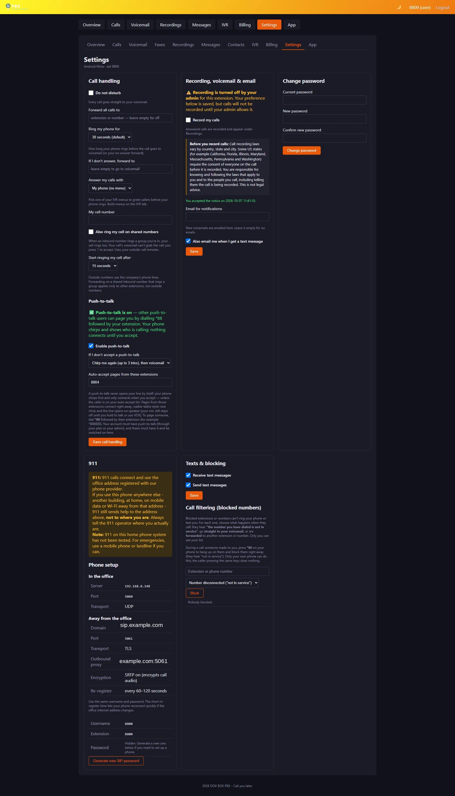

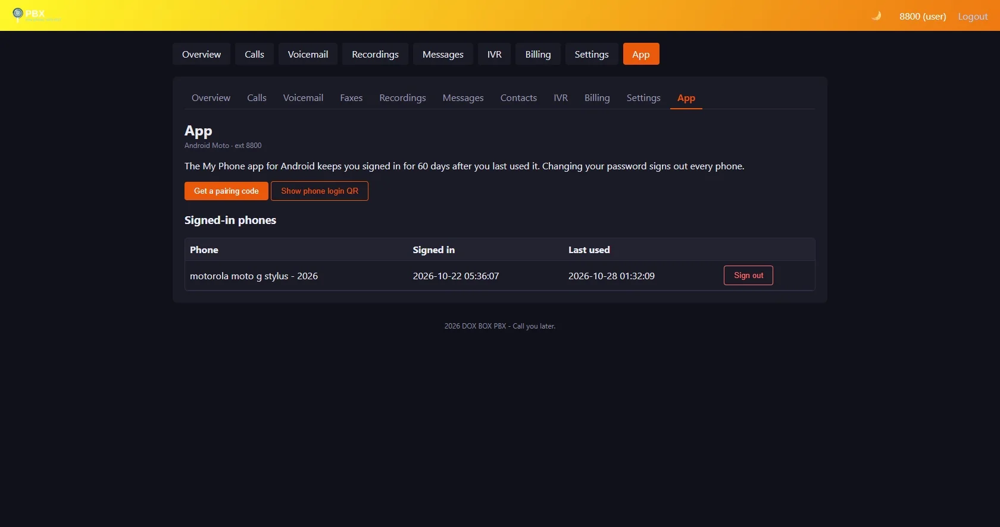